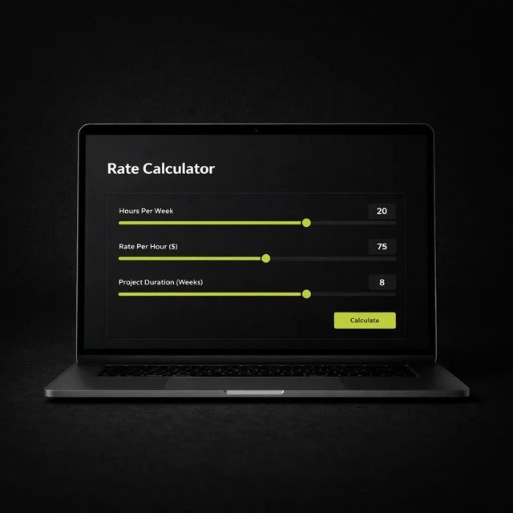

A beginner-friendly guide to freelance pricing: find your minimum rate, research the market, choose hourly, project, or package pricing, and quote with confidence.
Most new freelancers do not set a low price because they think their work is worth little. They set a low price because they are afraid: afraid of losing the client, afraid of looking inexperienced, and afraid that someone cheaper will take the job. A price that is too low creates its own problems. It attracts clients who value cheap work, leaves no room for revisions, and leads to burnout. Worse, it teaches you to work harder for less, which is difficult to reverse later. Pricing well is about covering your real costs, respecting your time, and giving clients a clear offer.
Before you look at what others charge, work out your own floor: the lowest rate you can accept without losing money or working for free. Start with your monthly needs, including internet, software, phone, and living costs you must cover from freelance income, plus a buffer for tax and quiet weeks. Then estimate how many hours you can realistically bill each week. Remember that freelancing includes unpaid work too, such as proposals and invoicing. If you plan to work forty hours a week, you may only bill twenty-five of them. Divide your monthly target by your realistic billable hours, and you have a rough minimum hourly rate. This number is not your final price for every job, but it stops you from accepting work below survival level. If a project pays less than this floor, it needs a smaller scope, not a lower rate.

Next, research what freelancers in your service and skill level actually charge on platforms such as Fiverr and Upwork, and in freelance communities. Look at completed profiles with reviews, not only the cheapest new listings. The lowest prices often come from people testing a platform or offering a very limited service. Copying them puts you in a race to the bottom that you cannot win. Instead, note the range for beginners in your niche: for example, what new designers, writers, editors, or virtual assistants with a few reviews charge for a comparable package. Aim for the lower-middle of that range when you are starting out, not the very bottom.
The way you charge matters as much as the number. Hourly pricing is simple and works well when the scope is unclear, such as ongoing support or a client who keeps adding small tasks. Project pricing, a fixed price for a defined result, is often better for beginners once you can estimate your time. A logo package, a set of social media posts, or a 1,000-word article can each have a clear price, a clear list of deliverables, and a clear number of revisions. Package pricing goes one step further by bundling common services into two or three options, such as basic, standard, and premium. Packages help clients compare and choose without haggling over every detail, and they protect you from endless extras. Whichever model you choose, write down before work starts what is included, how many revisions are included, and when payment is due.
It is reasonable to offer a lower price for your first few clients while you build a portfolio and reviews. The mistake is offering that discount without a reason or an end point. A strategic starter offer is a reduced rate for your first three projects in exchange for a testimonial and permission to show the work. That trade has value for you, and the client understands the price is temporary. After those first projects, raise your rate for new clients. You do not need to announce a big increase or apologise for it. Simply quote your new rate on the next proposal. Existing clients can be told politely, with notice, that your rate will change from a specific date.
How you present a price affects how it is received. Avoid phrases like "I hope this is okay" or "I can do it for maybe this much if you want." Instead, state what the client gets, then the price, then the next step. For example: "This package includes research, a first draft, and two revisions. The price is fixed, and I can start this week if you would like to proceed." Then stop and let the client reply. If a client says the price is too high, do not discount immediately. Offer a smaller package instead, which keeps your rate intact while still helping the client. If they only want the cheapest option, it is better to decline politely than to accept work that drains your time and confidence. A fair price, stated clearly, is part of good service, not something to feel guilty about.
Occasionally, one small portfolio piece can help, but do not make free work a habit. A reduced rate with a clear exchange, such as a testimonial, is usually a better deal.
Hourly pricing is simpler when the scope is unclear. Project pricing is often better once you can estimate time, because it rewards efficiency and gives the client a clear total.
After your first few completed projects, positive feedback, and reviews — raise rates for new clients first, and give existing clients polite notice of a change date.